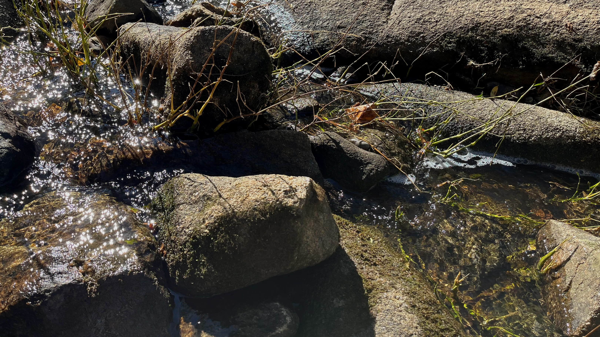
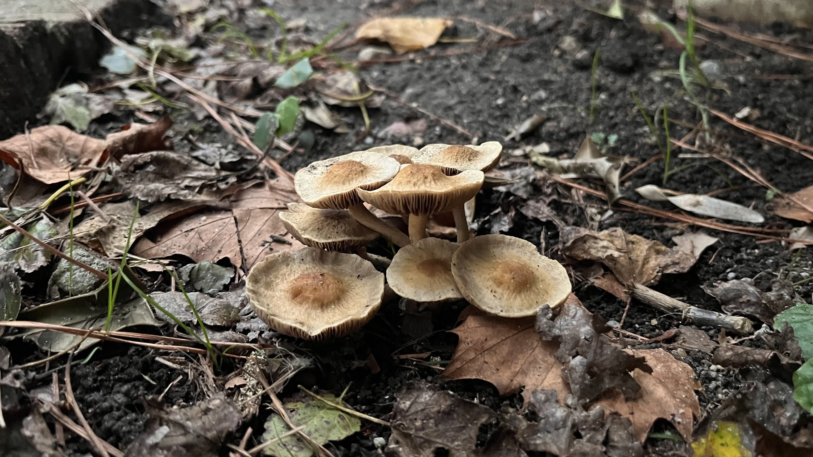
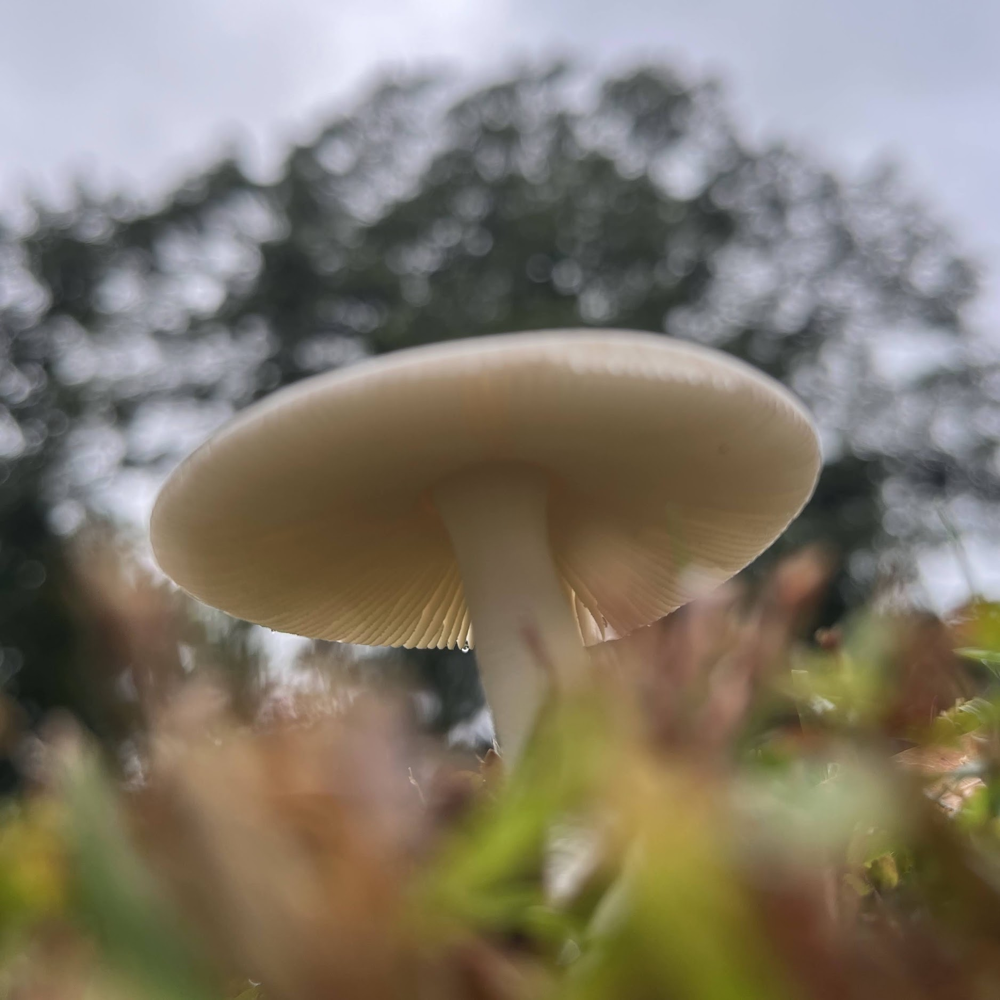

About Me:
doing tasks for work and for fun:
I like numerical simulations, low-level programming, and interpretable machine learning
modelling. I find great joy in a well automated and user friendly spreadsheet, and in a good graph!
I see problems as inherently solvable and will make a spirited and relatively well documented series of attempts to solve them until I reach an acceptable end result.
playing and having hobbies:
I also like frolicking in nature and taking pictures of flowers
and mushrooms. One day, I want to restart my hobby of wheel throwing.
I've been very involved in the ACM, Society of Women in Computing, Linux, and Robotics clubs during undergrad.
I also enjoy robotics and was very dedicated to the CAD, mechanical,
and outreach subteams of my FIRST Robotics Competition team from
6-12th grade and I now go back when I can to mentor (in intro CAD and
leading outreach activities).
some of my favorite things:
My favorite animal is the gar and my
favorite type of fungus is arbuscal mycorrhizal fungi, such as
Rhizophagus irregularis. Investigations to find my favorite color remain ongoing.

Tools and Skills:
- Languages: English (fluent), German (conversational), Mandarin Chinese (elementary)
- Programming: R, Python, C++, C, Bash, Powershell, Matlab, Java, HTML/JS/CSS
-
Related Libraries and Tools:
- Plotting: seaborn, matplotlib (Python), Plotly (Python, R),
- High Performance Computing (HPC): PBS
- Organizational: Linux, Git, LaTeX, Markdown, Google Workspace, Microsoft Office
- Design: Solidworks, Bricklink Studio, Procreate
- Soft Skills: Problem solving, teamwork, time management, communication, troubleshooting
Education
William and Mary / 2022 - 2026, Williamsburg, VABachelors of Science in Computer Science and CAMS Mathematical Biology
Awards
Dean's List (Fall 2022-Fall 2024)Computer Related Projects:
Mycelial Growth Models
Reviewed literature on hyphal growth and recreated differential equation models with direct numerical methods
Recognizing Phishing Websites
Trained decision tree, random forest, and XGBoost models on a dataset of website characteristics to predict whether they were phishing websites or not.
Diagnostics and feature importances were extracted and compared for each model.
Predicting Bike Rentals
Used model selection and residual analysis to choose a best-performing linear regression model predicting bike rental counts based on environmental and temporal data.
Recognizing Disruptive Fusion Data
Using a dataset of fusion characteristic measurements, created models classifying fusion as disruptive or not. Compared diagnostics and feature importances for decision tree, random forest, and XGBoost models. Trained multi-layer perceptrons and bayesian neural networks and compared results.
Benchmarking
I currently work on benchmarks of a storage system and linear solvers.
Some Favorite Mushroom Photos I've Taken:



